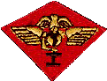
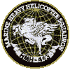
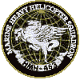
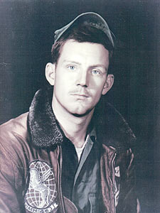

William Stephen ClarkCorporalHMH-463, MAG-16, 1ST MAW United States Marine Corps 07 November 1946 - 28 July 1968 Eau Gallie, Florida Panel 50W Line 022 |

 

| |
 
|
 |
The database page for William Stephen Clark
"ODE TO A SOLDIER'S MOTHER"A soldier's Mother worries when he goes to war.She wonders if he is safe and happy, or if she will see him any more.
She knows he doesn't want this war,
I don't want this War,
So if I should die in combat,
If God should take me unto him,
Written by Killed in VietNam July 28,1968 |
"TO MY UNCLE, WHO DIED IN VIETNAM"You're the uncle I never knew,Knowing they killed you makes me blue, When I see the wall it makes me cry, And I wonder why you had to 'DIE'?
I don't know why your life ended that way,
You died for us, and that I trust,
Written March 1998 by Steve's niece Steve, You're still my hero, big brother. I love and miss you daily, will see you in heaven. Until then,
Forever your lil sis |
|
Steve, Thank you for loving us enough to serve your country. You are still a part of my life, you live on through your nephew who looks a lot like you and has a lot of your qualities. He even wanted to be a Marine, but his grandmother did not want to lose another Steve... so he protects us as a Firefighter/EMT. We have two Heroes named Steve. Be ready with a hug when I get there!
Nancy |
|
On my first visit to the Wall I was asked to look up a name for a man who works at my school. The name given to me was "William S. Clark". I have heard many great stories about William and I am honored to have found him on the Wall. My friend and I wrote him a letter of thanks and let him know his old friend said "Hi". The man at my school was supposed to be on the plane that crashed and killed William and his crew; instead he was asked to do work elsewhere that day and is still alive today. I am very lucky and honored to have heard stories about William, and I would like to thank him for all he's done. I looked up pictures of the Wall on the internet and found a picture of 49W ... You could see 1/2 of 50W and the line where William's name is located, but you couldn't see his name. Maybe I'm wrong, but I looked at this as a way of him saying hi, like he was letting us know that he remembers. Every time I go to the Wall I am going to look up William's name and thank him as well as all the other names.
Sincerely, |
A Note from The Virtual WallCorporal William S. Clark was one of five men of HMH-463 killed when their CH-53A Sea Stallion (BuNo 153284) went down:
Pop-A-Smoke Site .
These men, and others of the squadron, |
|
The point-of-contact for this memorial is his sister, Nancy Clark Bradley nancbrad@aol.com 1 May 2001 |
|
Top of Page
www.VirtualWall.org Back to |
With all respect
Jim Schueckler, former CW2, US Army
Ken Davis, Commander, United States Navy (Ret)
Last updated 02/07/2006